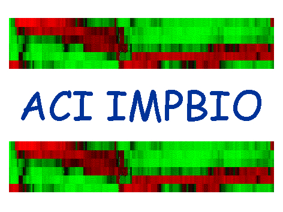

|
|
|

|
Objectifs
du projet
Ce projet vise à identifier les acteurs génétiques susceptibles d'influencer
sensiblement le comportement des réseaux de gènes complexes, ainsi que celui
des réseaux de gènes en interaction avec le métabolisme.
Trois applications biologiques ciblées seront étudiées et feront l'objet
d'expérimentations : le métabolisme des lipides du foie chez le poulet; la signalisation de TGFb dans le cancer
du foie; l'induction de NFkB, régulateur de la signalisation inter-cellulaire et du cycle cellulaire.
L'analyse des applications met en évidence quelques phénomènes incontournables pour la
modélisation des organismes pluricellulaires :
a) Existence de plusieurs échelles de temps ; b) Complexité des systèmes, dont la maitrise impose
d'avoir une approche hiérarchique et modulaire; c) Stochasticité des processus biochimiques conduisant
d'une part à des observations bruitées et d'autre part à des fluctuations du phénotype et
à des instabilités.
|
|